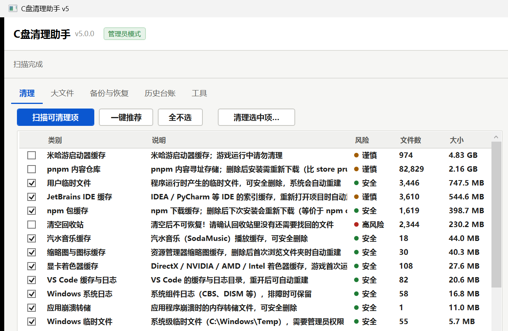
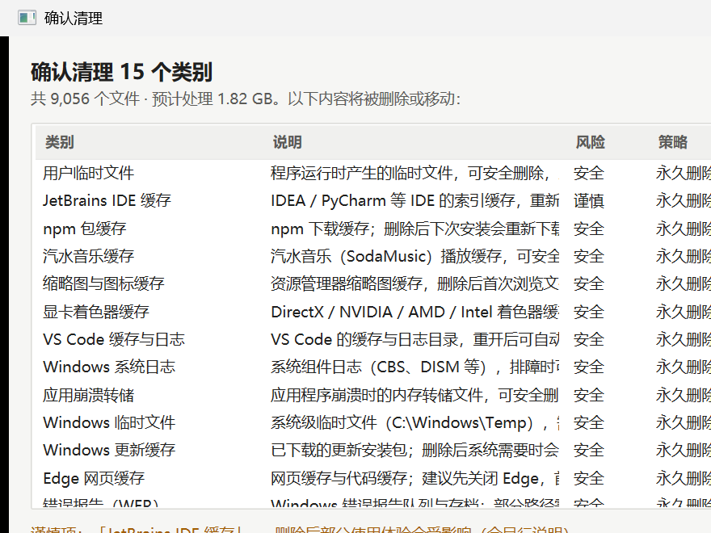
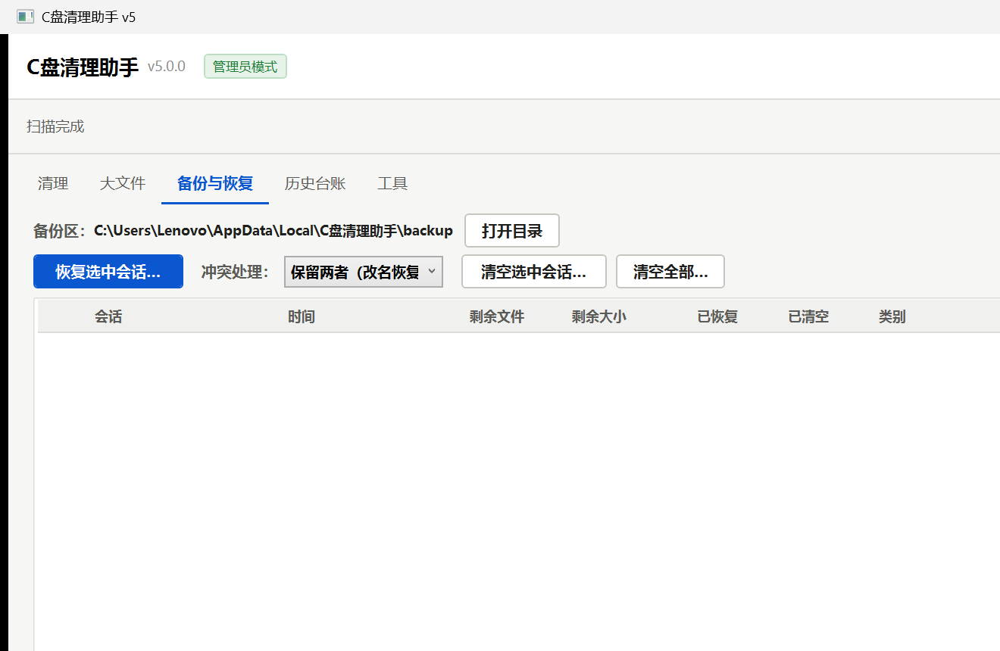
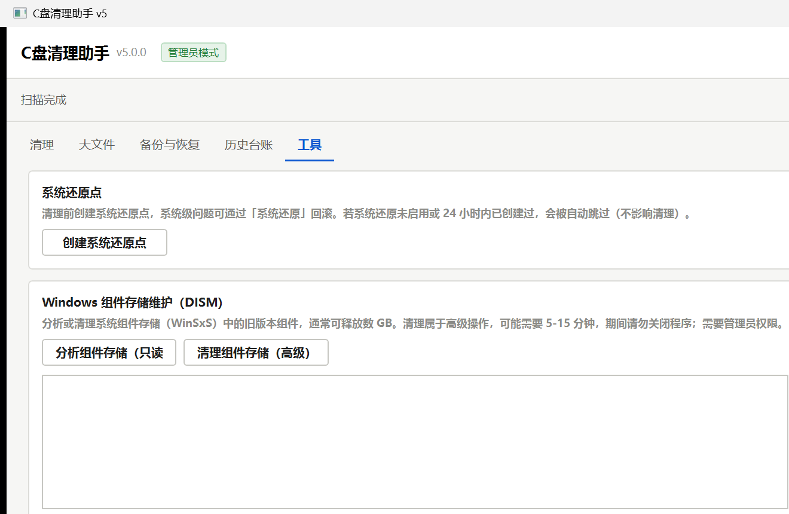

User Guide
C盘清理助手 v5.0 使用说明
免安装、无需联网、数据不出本机。双击 C盘清理助手.exe 即可使用；建议以管理员身份运行以覆盖系统级缓存。
01
30 秒上手
- 双击运行
C盘清理助手.exe（建议右键"以管理员身份运行"）。 - 点「扫描可清理项」，等待约 2 秒，列表显示每个类别的文件数与可释放大小。
- 核对勾选（默认只勾"安全"级）→ 点「清理选中项…」→ 在确认对话框核对数量与风险 → 点「开始清理」。
清理完成后会弹出报告：释放了多少空间、多少进了备份区、多少被跳过；每次操作都会写入历史台账。

02
界面导览
| 页签 | 用途 |
|---|---|
| 清理 | 主流程：扫描 → 预览 → 勾选 → 清理 |
| 大文件 | 找出占空间的大文件（默认 ≥100 MB），可定位、可移入回收站 |
| 备份与恢复 | 查看备份区、恢复文件、清空备份区（清空后空间才真正释放） |
| 历史台账 | 每次清理/恢复的记录，支持 CSV / HTML 导出 |
| 工具 | 系统还原点、DISM 组件清理、已装软件列表、规则在线更新、设置 |
03
扫描与预览
扫描不改动任何文件；列表展示每个类别的文件数与大小。风险分级用色点标识：
- 安全：可自动重建的缓存/临时文件，默认勾选；
- 谨慎：删除后影响部分体验（如浏览历史、IDE 索引），默认不勾选；
- 高风险：不可逆操作（如清空回收站），默认不勾选，执行前需额外确认。
点击任一类别，右侧显示文件明细（Top 1000）；取消勾选可逐个排除不想删的文件。被占用的文件、无权限的目录会自动跳过并记录原因。
04
清理方式与确认
| 方式 | 说明 |
|---|---|
| 标准清理（推荐） | 按类别安全策略执行：缓存类永久删除；历史/下载等移至回收站或备份区 |
| 全部先备份 | 所有文件先移入备份区（最稳妥、可恢复）；清空备份区后才释放空间 |
| 全部永久删除 | 立即释放空间、不可恢复（需自行确认） |
确认对话框内可核对：每个类别的文件数、大小、风险与策略；勾选"清理前创建系统还原点"可为系统级回滚加一道保险（不可用时自动跳过并说明）。

05
结果、恢复与备份区
- 清理完成后弹出报告：永久删除 / 备份区 / 回收站 / 跳过 的数量与空间，以及 C 盘可用空间前后变化。
- 恢复：进入「备份与恢复」→ 勾选会话 → 「恢复选中会话…」；同名冲突可选"保留两者（改名恢复）/ 跳过 / 覆盖"。
- 释放空间：备份区文件在"清空备份区"之前仍占用磁盘；确认无需恢复后清空即可释放。

06
历史台账
每次清理/恢复/清空都会记录：时间、类别、文件数、释放空间、跳过与异常信息；支持导出会话 CSV、类别明细 CSV 与 HTML 报告（双击直接打开）。记录保存在本地，应用重启不丢失。
07
工具页
- 系统还原点：一键创建（有频率限制时自动跳过并提示）。
- DISM 组件存储维护：先"分析"查看可回收量（只读），再决定是否"清理"（5–15 分钟，请勿中途关闭）。
- 已装软件：只读列表便于排查占用；卸载请用系统"应用和功能"。
- 规则在线更新：见第 08 节；设置：备份区位置可改到其他磁盘。

08
规则在线更新
- 在「工具」页填入可信更新地址（https://… 或本地文件路径）→「检查更新」（显示差异）→「应用更新」。
- 更新只下载、不上传任何本机数据；应用前自动备份旧版（保留最近 5 份，可回退）；断网不影响清理。
- 也支持「从本地文件导入」离线更新。
09
常见问题
| 问题 | 处理方式 |
|---|---|
| 提示"需要管理员"或部分项目被跳过 | 系统级缓存需管理员权限；关闭后右键"以管理员身份运行"即可。普通用户模式下其余功能不受影响，被跳过项会注明原因。 |
| 文件显示"被占用"没删掉 | 文件正被程序使用（如浏览器）。关闭对应程序后重扫重清即可。 |
| 清理后空间没有增加 | 备份模式 / 回收站的文件要等"清空备份区 / 回收站"后才释放；标准模式的永久删除类别会立即释放。 |
| 还原点没创建成功 | 系统还原未启用或 24 小时内已创建过，属正常节流，不影响清理。 |
| 数据都在哪？ | %LOCALAPPDATA%\C盘清理助手\（配置、日志、台账、备份区）。不上传任何数据。 |
| 想放到 U 盘随身带？ | 程序目录新建空文件 portable.flag，数据改存程序目录 data\。 |
| 如何卸载？ | 删除程序文件夹即可（免安装）；连同 %LOCALAPPDATA%\C盘清理助手\ 一起删除即彻底清理。 |
10
安全边界（不会碰什么）
- 不触碰系统关键区域（System32、WinSxS、驱动、启动相关）与个人文档 / 桌面 / 图片 / 视频 / 音乐 / 密钥目录；
- 不做注册表清理、驱动 / 服务调优；
- 所有删除动作均经过"预览 → 确认 → 台账"，并在执行期由安全保护名单逐文件复核。